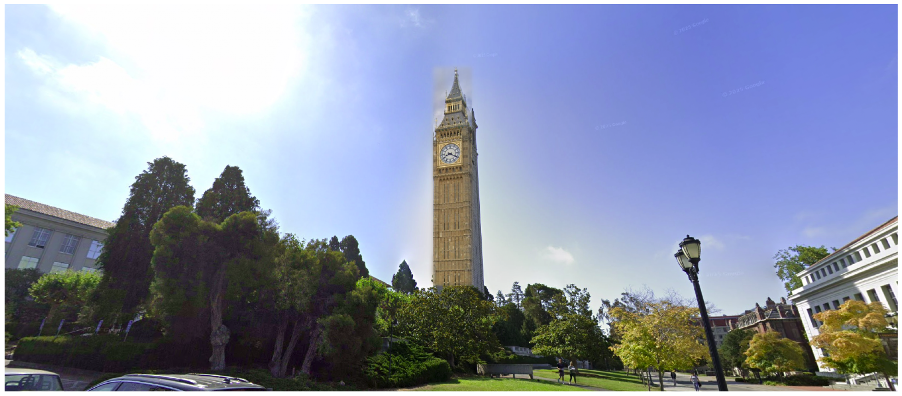
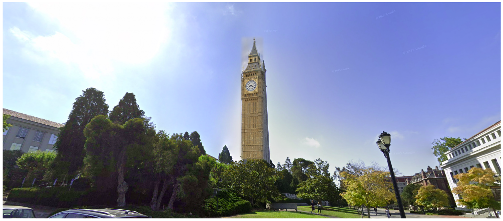

proj2/
Fun with Filters and Frequencies!
Overview
This project explores fundamental concepts in image processing through both spatial and frequency domain operations. We begin by building intuitions about 2D convolutions and filtering, implementing everything from scratch to understand the mathematics behind image transformations. We then advance to frequency domain analysis, creating hybrid images that change interpretation based on viewing distance, and implementing multi-resolution blending for seamless image compositing.
Part 1: Fun with Filters
Part 1.1: Convolutions from Scratch
I implemented 2D convolution from scratch using NumPy, starting with a naive four-loop implementation and optimizing
to a two-loop version. The implementation includes proper zero-padding to maintain image dimensions. I compared my
implementation with scipy.signal.convolve2d to verify correctness.
Implementation Details
Four-loop implementation: Iterate over each output pixel position and kernel position
Two-loop implementation: Vectorized inner operations for better performance
Padding: Zero-fill values to handle boundaries correctly
def pad(img, x, y):
h, w = img.shape
out = np.zeros((h + 2*y, w + 2*x), dtype=np.float64)
out[y: y + h, x: x + w] = img[:]
return out
def four_loops(img, kernel):
h, w = img.shape
ky, kx = kernel.shape
ky, kx = ky//2, kx//2
kflip = kernel[::-1, ::-1]
work = pad(img, kx, ky)
out = np.zeros((h, w), dtype=np.float64)
for i in range(h):
for j in range(w):
acc = 0.0
for y in range(kernel.shape[0]):
for x in range(kernel.shape[1]):
acc += work[y + i, x + j] * kflip[y, x]
out[i, j] = acc
return out
def two_loops(img, kernel):
h, w = img.shape
ky, kx = kernel.shape
kflip = kernel[::-1, ::-1]
work = pad(img, kx//2, ky//2)
out = np.zeros((h, w), dtype=np.float64)
for i in range(h):
for j in range(w):
patch = work[i:i+ky, j:j+kx]
out[i, j] = np.sum(patch * kflip)
return out
def auto_convolve(img, kernel):
if img.ndim == 2:
return convolve2d(img, kernel, mode='same', boundary='symm')
else:
out = np.zeros_like(img, dtype=np.float64)
for c in range(img.shape[2]):
out[..., c] = convolve2d(img[..., c], kernel, mode='same', boundary='symm')
return out
Basic Convolution Results
Part 1.2: Finite Difference Operator
Using finite difference operators D_x = [[1, 0, -1]] and D_y = [[1], [0], [-1]], I computed partial derivatives and gradient magnitudes of the cameraman image. The gradient magnitude reveals edges but includes significant noise.
Edge Detection with Thresholding
To create an edge image, I binarized the gradient magnitude using a threshold of 50 (pixel value), chosen to balance between noise suppression and edge preservation:
Part 1.3: Derivative of Gaussian (DoG) Filter
To reduce noise in edge detection, I first smoothed the image with a Gaussian filter before applying derivatives. This can be combined into a single convolution using Derivative of Gaussian (DoG) filters.
Gaussian Smoothing Results
Key Observation: Gaussian smoothing significantly reduces noise in the edge detection. The edges are cleaner and more continuous compared to the direct finite difference approach. Additionally, the threshold decreased by 2x, showing how Gaussian filtering is more optimal for filtering noise while detecting the most edges.
Derivative of Gaussian Filters
By convolving the Gaussian with D_x and D_y, we create DoG filters that combine smoothing and differentiation:
Verification: Applying DoG filters directly produces identical results to smoothing then differentiating. Confirmed this by taking the difference of the max pixel from both images, and the difference was 0.
Part 2: Fun with Frequencies
Part 2.1: Image Sharpening
Using the unsharp masking technique, we can enhance image details by amplifying high frequencies. The process involves subtracting a blurred version from the original to isolate high frequencies, then adding them back with amplification:
Unsharp Mask Formula: sharpened = original + α * (original - blurred)
Taj Mahal Sharpening
Original image, blurred version, and sharpened results with different alpha values:


Blur-then-Sharpen Evaluation
To evaluate the technique, I took a sharpened Taj image (α = 1), blurred it, then attempted to restore it through re-sharpening:

Observation: While sharpening enhances edges, it cannot fully recover details lost in blurring. The re-sharpened image shows enhanced edges but lacks the fine details of the original sharpened image, demonstrating the fundamental limitation that information lost through blurring cannot be completely restored.
Additional Sharpening Example - Tree
Another example with a tree image, showing the same sharpening process:

Part 2.2: Hybrid Images
Following Oliva, Torralba, and Schyns (2006), I created hybrid images that change interpretation with viewing distance. High frequencies dominate at close range while only low frequencies are visible from afar.
Cat/Man Hybrid Results
Messi/Ronaldo Hybrid Results (with Frequency Analysis)
Frequency Domain Analysis
Complete frequency domain analysis for the Messi/Ronaldo hybrid:

FFT Analysis: The frequency domain visualization clearly shows the filtering process. Initially, both Messi and Ronaldo images contain the full frequency spectrum. After filtering, Ronaldo's image retains only low frequencies, while Messi's image keeps only high frequencies. The hybrid FFT combines both components, showing how the final image contains low frequencies from one source and high frequencies from another.
Smile/Neutral Hybrid Results
Part 2.3: Gaussian and Laplacian Stacks
I implemented Gaussian and Laplacian stacks (similar to pyramids but without downsampling) to prepare for multi-resolution blending. Each level applies progressively more Gaussian blurring while maintaining full resolution.
Blending Process: The multiresolution blending works by decomposing each input image into frequency bands using Laplacian stacks. For each level, we blend the apple and orange Laplacian images using a mask that is also Gaussian-blurred at that level. This creates smooth transitions at each frequency scale - sharp transitions for high-frequency details and gradual transitions for low-frequency components. The final result is obtained by summing all the blended Laplacian levels, creating the seamless "Orapple" below.
Orapple Stack Visualization
Recreating Figure 3.42 from Szeliski - showing the Gaussian and Laplacian decomposition at different levels:

Part 2.4: Multiresolution Blending
Using the Gaussian and Laplacian stacks, I implemented Burt and Adelson's (1983) multiresolution blending algorithm. This creates smooth seams by blending different frequency bands separately.
The Classic Orapple
Custom Blends - Darbar Sahib
Original images used for blending:
Laplacian stack levels showing the blending process:

Custom Blends - Big Ben (Irregular Mask)
Original images used for blending with irregular mask:
Laplacian stack levels showing the irregular mask blending:
 

Custom Blends - Eye
Original images used for blending:
Laplacian stack levels showing the blending process:

Summary and Key Learnings
Most Important Learning: The power of frequency domain analysis in understanding and manipulating images. By separating images into different frequency bands, we can selectively enhance details (sharpening), create perceptually interesting hybrid images, and achieve seamless blending that would be impossible with simple pixel-level operations.
The multiresolution approach particularly impressed me - by handling each frequency band separately, the algorithm naturally creates smooth transitions that respect both the structure and texture of the source images. This principle extends beyond image processing to many signal processing applications.